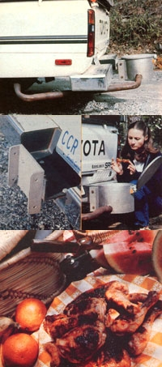

Most of us have heard of "cooking with gas".But it takes on a whole new meaning with. . .
Lately, most folks in this country have been concerned with squeezing more miles per gallon from their vehicles, but Bill Worrell-a personable teacher and inventor who hails from Art, Texas-has come up with a way to eke out a few meals per gallon as well.
What Mr. Worrell has designed is-in essence-a cast-aluminum pot that slowly cooks victuals, using only the heat from an internal combustion engine's exhaust. Of course, the food doesn't ever come in con tact with the noxious fumes . . . instead, the hot gas is circulated through a lower chamber while the simmering dinner (or breakfast or lunch) is held safely within the confines of a sealed upper chamber.
Bill calls the appliance-which he sells by mail-a "Go-Cooker" . . . and when he offered to send us a unit to road-test, we were so intrigued by the idea of his contraption that we just had to say yes.
Our Go-Cooker-a sturdy, well-built device about 9 inches high and 12 inches in diameter, with a heavy attached lid-arrived complete with a separate mounting bracket and all the nuts, bolts, and locking washers necessary to secure the auto oven in place. The bracket has eight drilled holes and is designed to fit, or at least be adapted to, nearly any kind of vehicle's rear bumper. We decided to attach the cooker to the back of MOTHER staffer Garry Turpin's Toyota pickup. Within just a few minutes-after boring holes in the bumper to match those in the mounting bracket-we had the hardware firmly attached.
Next, we simply slipped the cooker onto the assembly and secured the two components' flanges together with a pair of heavy duty bolts . . . which, in turn, are held by cotter pins, making it easy to take the oven off and put it on at will.
With our Go-Cooker in place but not yet connected to the exhaust system, we drove to our local muffler shop and had an extension piece-which is also attached with cotter pins for easy removal-custom-fit to connect the existing tailpipe to the entry hole in the oven's lower chamber. Exit openings at the side and bottom of the unit allow exhaust gases to escape.
In our case, this work cost just under $28. However, Mr. Worrell says the price will vary (generally, he claims, it'll be less than we paid) according to the kind of vehicle involved. He also says that although he'd like to include a complete tailpipe connector with his invention, custom installation is necessary because of the many different kinds of exhaust systems in use today.
All together, the procedure-from bare bumper to ready-to-go-took less than two hours. And with that out of the way, we were ready to begin our testing.
The following weekend, Garry and his wife Bonnie hopped in the Go-Cooker-equipped pickup and drove off for a day of kayaking in western North Carolina's Nantahala National Forest. The 110-mile trip from Spartanburg, South Carolina took about 2-1/2 hours . . . but Garry reports that his mind's-eye image of the foilwrapped chicken, simmering in barbecue sauce as the couple rolled along, made the miles seem to go by rapidly.
Unfortunately, when Garry and Bonnie arrived at their destination, they found that their dinner was not yet quite done . . . they had to drive around for another half-hour before the poultry was cooked to a turn! However, Garry attributes the problem to the highly efficient (and therefore relatively coolrunning) four-cylinder engine in his truck. A more typical powerplant, he theorizes, would likely give off hotter exhaust that might result in shorter cooking periods. Besides, he says, next time he'll simply plan a somewhat longer route . . . or parboil the chicken first . . . or just choose a dish that requires less heat to cook.
In any case, there's no doubt that Bill Worrell's "better idea" works . . . and that operating the auto oven to best advantage would be merely a matter of getting used to its performance with various foods on one particular vehicle.
We think the Worrell Go-Cooker is a great idea, and terrific fun to use, too (it'll even double as a portable charcoal grill when removed from your bumper). The device isn't inexpensive, though . . . its price is $119.95 (Texas residents need to add 4% sales tax) plus $4.95 for shipping and handling. On the other hand, such a purchase ought to last for many years . . . and should give you and your family plenty of opportunities, as you travel the miles, to turn out (ahem) bumper crops of delightful meals.
For $1.00 and a self-addressed, stamped business-size envelope, Bill will send you an information sheet on the Go-Cooker . . . and on his companion recipe book, Cruising Cuisine: A Mileage Menu, which sells for $5.95. Or if you'd prefer, you can just go ahead and send for your auto oven now by mailing a check or money order for the appropriate amount. In any case, direct your correspondence to GoCooker, Inc., Dept. TMEN, P.O. Box 56, Art, Texas 76820.
|
 FROM TOP: The auto oven installation? from bare bumper to ready-to-go? took under two hours; The mounting bracket... a taster... and a bumper-barbecued feast! |
|
|